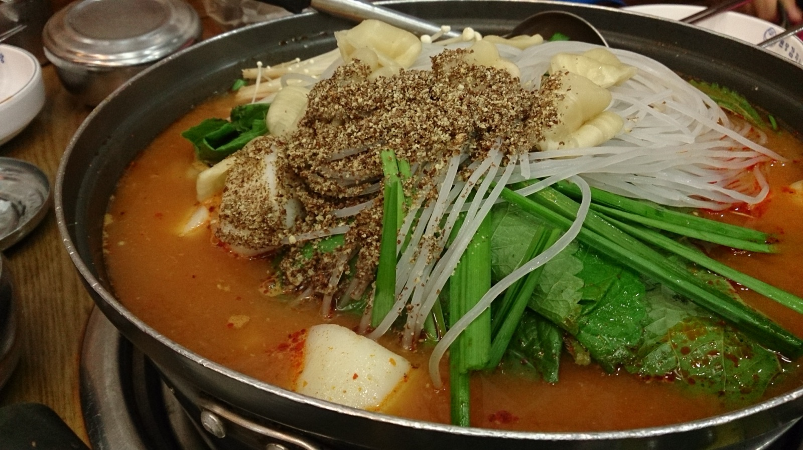
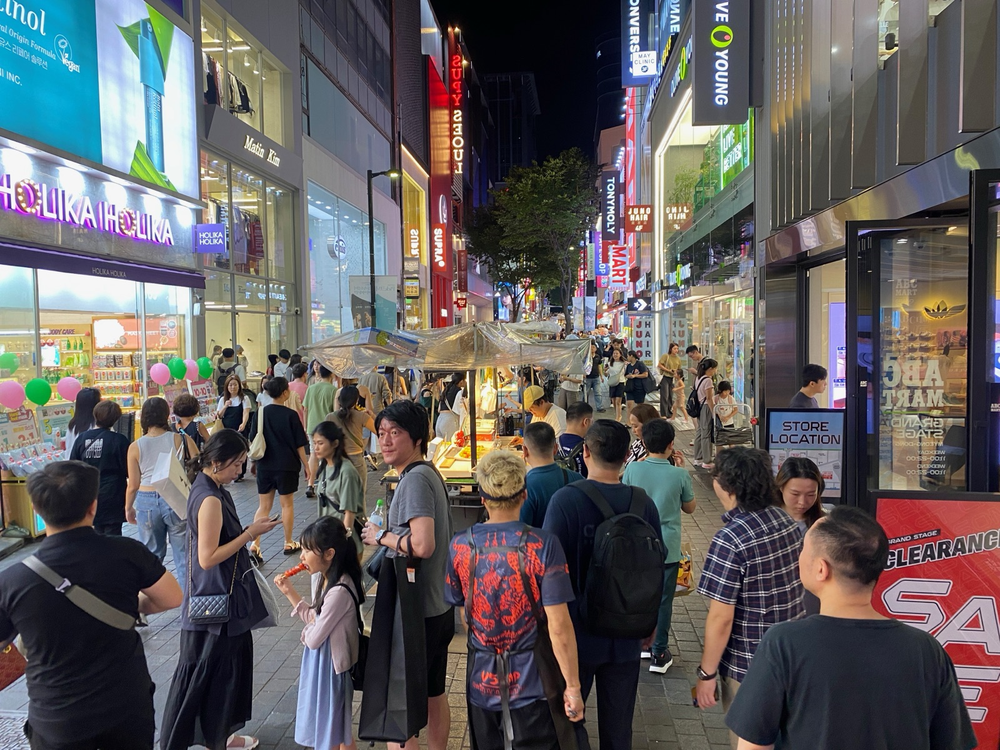
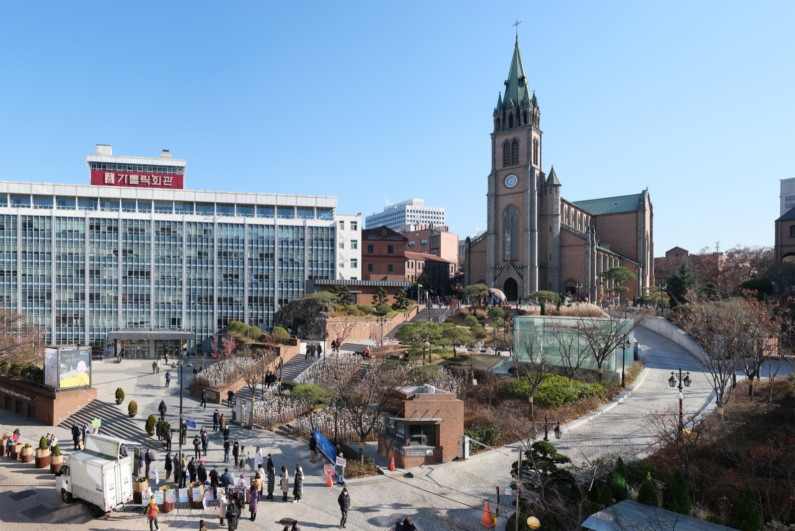

Seoul · Day 0 · 明洞 Myeongdong
D022 JUN 一
明洞到埗夜
第一鍋與燈牌街
第一鍋與燈牌街
落機後輕量夜遊：忠武路 Gudo 為起點，先食一鍋暖身，再沿明洞主街串食 → 掃 → 玩，食飽即收，養回體力。重點購物留 D4 日間補。
你嘅版本 · 21/6 晚定
行齊 4 站：①元堂 → ②夜市 → ③NiNi → ④聖堂（ÅLAND 剔走，雨天有力先加返）。唔 trim 短版 —— 落機照行完養精神。落雨 → ÅLAND（室內掃到深夜）或元堂（24h）。
Arrival · 抵港動線
01
CX418 國泰HKG 14:25 → ICN 19:05
02
入境 e-Arrival領行李 · 約 20:00 出關
03
私家 vanICN → 忠武路
04
Gudo 入住無人 · 自助
05
Climate Card5 日 ₩15,000
明洞主街一條夜線 食 → 掃 → 玩
1
晚餐
21:20
21:20
必到
元堂馬鈴薯排骨湯 明洞店 원당감자탕
24h 亮燈深夜豬骨鍋，脊骨慢熬濃白湯、骨肉一抿即脫，鹹鮮不辣 —— 落機夜最安穩一鍋熱湯。
價 ₩35,000 起／2–3 人鍋 · HKD 181 起步行 Gudo 5 分tag 爸爸食物
Rain本身 24h 室內 —— 全日落雨最終後備

「排骨湯與泡菜鍋都很棒，二十四小時營業，第一次吃味道還真不錯。」— 水晶安蹄 · 痞客邦
2
22:30
必到
明洞夜市街食一條街 명동 야시장
沿街即點即食：種子糖餅、可頌鯛魚燒、椰絲炸蝦熱辣上手，一條會發光的宵夜街。
價 ₩2,000–10,000／款 · HKD 10–52步行 元堂 3 分攤檔 17–23 落雨即收
Rain落雨即收 → 改元堂排骨湯 或 Daiso 明洞

「明洞夜市是最熱門的宵夜街，種子糖餅、鯛魚燒、炸蝦邊走邊吃最有氣氛。」— 波比看世界
3
23:00
可選
NiNi 明洞 夾娃娃機旗艦 니니 명동
整幢粉紅四層，夾娃娃每局 ₩1,000、頂層打卡，開到午夜。食飽玩一局收尾。
價 ₩1,000 起／局 · HKD 5 起步行 夜市 3 分tag 仔夾娃娃
Rain室內整幢娃娃機樓 · 雨天照玩

「明洞新開的四層大型扭蛋夾娃娃店，整幢粉紅色裝潢，每層機台款式各異。」— Trip.com Moments
4
途經
23:20
23:20
可選
明洞聖堂 夜景 명동성당
首爾最古老哥德式主教座堂，全年泛光照明，深夜仰拍鐘樓尖頂靜謐莊嚴。當路過外牆仰拍即可。
價 免費步行 NiNi 6 分最穩 21:00–22:30 影相
Rain落雨改 FUROA 室內咖啡 或 直接返酒店

「點著溫暖黃色燈光的聖堂，以三角剪影般的姿態出現在深紫色的夜色中。」— 艾莉絲・我的小旅行
備案 · 剔走ÅLAND 에이랜드 명동본점（媽媽女裝／仔男裝 · 11–23 · 室內）—— 今晚剔走；若落雨或仲有力，可加返做室內收尾。
D0 · 22 Jun 2026 · 天氣 ~28°C 梅雨未到（onset 25–27）· 地圖 Naver Map 到場核 pin · 價 1 HKD ≈ 195 ₩
版本：你嘅評估 21/6（4 站 · ÅLAND 剔走 · 唔 trim 短版）· 地圖到場核 pin · Generated by Claude Code
版本：你嘅評估 21/6（4 站 · ÅLAND 剔走 · 唔 trim 短版）· 地圖到場核 pin · Generated by Claude Code